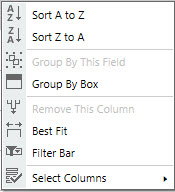
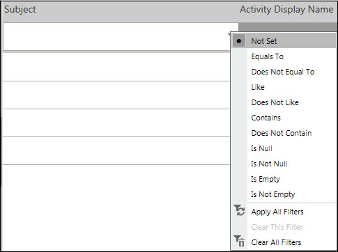

No
The Filter Bar in the Work items list is displayed when the Filter Bar option is selected from the right-click menu for the columns. This option allows users to filter the list for specific data.
Toggle Filter Bar Option

To set filters:
Filter Menu

When you have finished setting all the required conditions for the various columns, click the filter icon and select Apply All Filters.
To clear a particular filter:
To clear all filters: